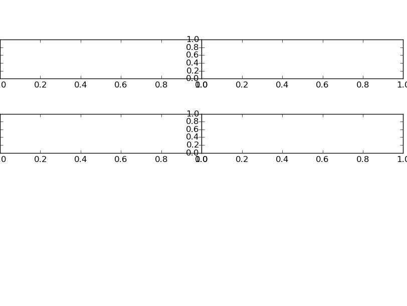

A commonly used feature of matplotlib is the ability to create subplots. Fortunately matplotlib provides many ways to do this. Unfortuantely, matplotlib provides many ways to do this.
It is important to recall the figure of how matplotlib is set-up. There is a figure which is the entire plotting area and each plot has a set of axes and hence a figure can have multiple axes. Thus setting up each axes in a way we want is critical. In my opinion, the object-oriented nature of matplotlib is essential to understand the various commands. Unfortunately many example use the default plt.subplot-type styling and while this is good for quick plots, I believe it obscures the nature of the subplotting and also does not generalise well.
The first way to add subplots is directly through manipulating the figure object using the figure.add_subplot option.
In the following code, we show a simple way to create subplots directly from the figure object.
import matplotlib.pyplot as plt
fig=plt.figure()
ax0=fig.add_subplot(2,2,1)
ax1=fig.add_subplot(2,2,2)
ax2=fig.add_subplot(2,2,3)
ax3=fig.add_subplot(2,2,4)
plt.show()
This code will produce the following figure
Thus we have created a 2x2 grid of subplots, labeled ax0 through ax3. From here, we could then control the axes properties directly through the individual axes objects.
Now that we have subplots, there is the possibility that we want to adjust the spacing between the edge of the subplots and the figure. This can be adjusted through the figure.subplots_adjust option. This has 6 options to change, left, right, top, bottom, hspace, wspace.
To illustrate the differences between these, let us remake the above plot changing these options.
import matplotlib.pyplot as plt
fig=plt.figure()
ax0=fig.add_subplot(2,2,1)
ax1=fig.add_subplot(2,2,2)
ax2=fig.add_subplot(2,2,3)
ax3=fig.add_subplot(2,2,4)
fig.subplots_adjust(hspace=0.90,wspace=0.0,left=0.0,right=0.99,bottom=0.5,top=0.87)
plt.show()
As we can see, we can finetune the whitespace between the plots. Note that for the top,left,right,bottom are all relative to the origin. This means that right=0.99 means the right edge will be at 0.99 of the width along the x-direction. The hspace, wspace are not relative but a different scale. Play around with them to understand how they act.
In this case, the ticks overlap and to fix this we must turn them off. See the page about ticks for information on how to do this.
one should note that if we wanted to adjust only the left column hspace and not the right column hspace, we cannot do this with this set-up. Instead we must use GridSpec which will be discusesd later.